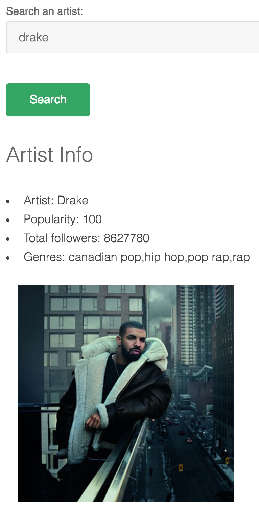
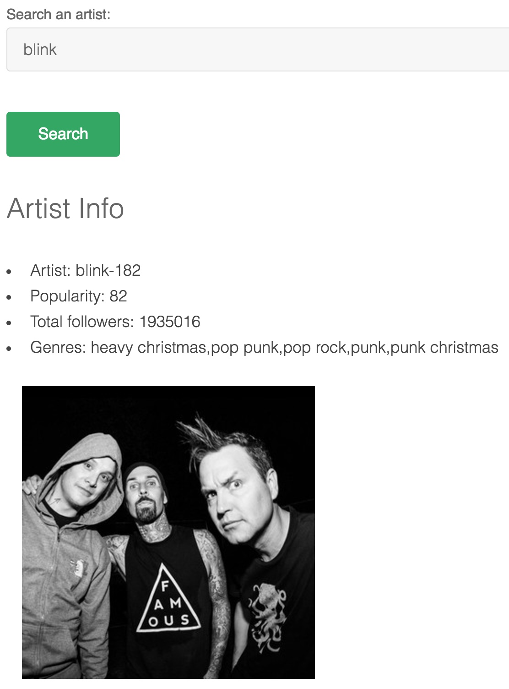

The JSON response
Parsing the response
Yeah, it doesn't look great. But the good news is, the call to Spotify's search endpoint worked! Now we just need to parse out what we want and ignore everything else. There are a few properties that I want to point out. The name value is "Wolfgang Amadeus Mozart", so that's good. Spotify also returns the genres he's associated with (in an array), the total number of his followers on Spotify, an image associated with the searched artist (the image will always be in an array of size 3, each element is the same image just smaller than the one before it, starting at 640x640 px), his Spotify ID, and his Spotify popularity value, to name a few. You should also notice that Mozart was returned as 0: Object, just one element in an array of 20. All the other entries are other artists that matched our "Mozart" query. Luckily, Spotify does a pretty good job returning the results in descending order of relevance.
So like, now what?
Now we can do whatever we want with this data! Something super simple (this is what I whipped together to test the search endpoint, actually) is to create a form that takes an artist as input and returns a sort of "profile" for the artist, including information like their stage name, their popularity on Spotify, the total number of followers they have, the genres they're associated with, and an image of them. 
I think we can do something cooler than that though. Looking back at the Spotify API endpoints, it looks like if you have an artist's Spotify ID, you can make requests to retrieve their albums, top tracks, and related artists. Let's try to make an application that searches an artist and puts together a playlist of related artists' top tracks. Continue